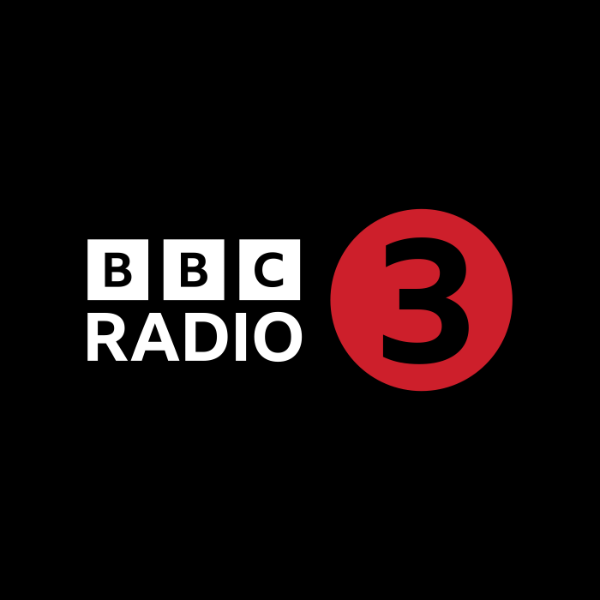

Home
Welcome to the home page.
Radio Stations

BBC Radio 3
YLE Klassinen
ABC Classics (Australia)

ABC Classics 2 (Australia)
BR Klassik (Barvia, Germany)
MDR Klassik (Saxony, Germany)

MDR Kultur Livestream (Saxony, Germany)
MDR Kultur Klassik im Konzert (Saxony, Germany)
CBC Radio Music (Ottawa, Canada)
Classic FM (UK)
NPO klassiek (The Netherlands)

Radio Clásica (Spain)
Radio Classica Bresciana (Brescia, Italy)

Radio Classique (France)
Radio New Zealand Concert (New Zealand)

Radio Romania Muzical (Romania)

radio klassik Stephansdom (Austria)

Radio Swiss Classic (DE) (Switzerland)
France Musique (France)
Rai Radio 3 Classica (Italy)
RTÉ lyric fm (Ireland)
Otto's Baroque Music Radio (Switzerland)
Otto's Classical Music Radio (Switzerland)
Ö1 (Austria)
Opus94 (Mexico City, Mexico)
Venice Classic Radio Auditorium (Venice, Italy)
Venice Classic Radio Live (Venice, Italy)
Classic 947 (Shanghai, China)
streamtheworld example 128kbs
Programmes
Dog Image

About
This is a sample app made using Cordiva demonstrating multiple sections.
Using a web based aplication allows easy development of new functionality.